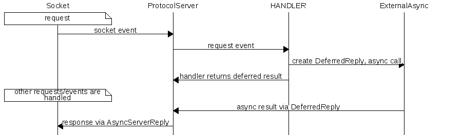

Evo supports asynchronous I/O for high performance clients and servers:
See also: I/O Streams & Sockets
Evo async client and server classes are under namespace async
Alpha: Evo Async I/O classes should be considerd a Work In Progress
- Dependencies
Evo async I/O requires libevent 2.0 or newer:
- Linux/Unix/Cygwin: Link with
-levent_core or -levent
- To use libevent in multiple threads
#define EVO_ASYNC_MULTI_THREAD 1 (before evo includes) and also link with -levent_pthreads – otherwise libevent is not thread safe, even with separate instances
- Windows/MSVC: Link with
libevent_core.lib in project configuration:
Configuration -> VC++ Directories -> Include DirectoriesConfiguration -> VC++ Directories -> Library DirectoriesConfiguration -> Linker -> Input -> Additional Dependencies- To use libevent in multiple threads
#define EVO_ASYNC_MULTI_THREAD 1 (before evo includes) – otherwise libevent is not thread safe, even with separate instances
Near the beginning of a program using sockets, call Socket::sysinit() for best portability (required in Windows).
- Supported Protocols
Evo async I/O is designed to support clients and servers using different protocol implementations.
- Client
The async client classes are named ProtocolClient, where Protocol is the protocol used.
- Create a
ProtocolClient instance, and setup methods as needed:
- Call a connect method like connect_ip() – this starts a new connection and returns immediately (non-blocking)
- Call client methods to make requests (methods are protocol specific) – the requests are queued while the client is connecting (non-blocking)
- An event-loop is required to handle async events with one of the following approaches (examples are below):
- Blocking: Call client.runlocal() to run a local event-loop in the current thread. This blocks until all queued requests are processed and receive responses.
- Multiple clients can share the same event-loop, call client.attach_to() to attach client to another client-event loop
- When attached, only the root client (the one all others attached to) can run an event-loop
- This is useful for pipelining multiple requests then waiting for them to finish, and doing this with multiple clients allows some concurrency (in a single thread)
- Not thread safe – Only one thread may call this at a time
- Non-blocking Background Thread: Not yet implemented
- Non-blocking Server Back-end: Call client.attach_to() to attach client to a server event-loop
- This is done when a server is using the client to call another server – one or more clients can share the server event-loop
- Not to share between threads – Only safe to use from server callbacks or other clients using the same event-loop, i.e. the same server thread
- Works with multi-threaded server, as long as each server thread has it's own separate back-end client
Client callback types:
- OnConnect
- OnError
- Some clients may provide
OnEvent, which combines multiple events
- Other callbacks depend on the
Protocol
Here's an example using MemcachedClient (Memcached protocol):
void on_connect() {
}
void on_store(
const SubString& key, Memcached::StoreResult result) {
con().
out <<
"on_store() " << key <<
' ' << Memcached::StoreResultEnum::get_string(result) <<
NL;
}
con().
out <<
"on_get() " << key <<
" '" << value <<
"' " << flags <<
NL;
}
};
int main() {
const ushort MEMC_PORT = 11211;
OnEvent on_event;
memc.
set(
"key1",
"value1", on_event);
memc.
set(
"key2",
"value2", on_event);
memc.
get(
"key1", on_event);
memc.
get(
"key2", on_event);
return 0;
}
- Server
An async server class is created using a template class implementing a PROTOCOL and passing it a user-defined HANDLER class that implements the protocol event callbacks.
- You implement a
HANDLER class with the event (callback) methods expected by the PROTOCOL
HANDLER is usually a struct (public members) and must:
- inherit
ProtocolServerHandler (where Protocol is the PROTOCOL name), which itself inherits AsyncServerHandler
- optionally define nested struct types:
Global and/or Shared – if not defined then defaults from AsyncServerHandler are used:
Global normally stores configuration info that is read-only from requests, and is shared by all requests and all server threads
- This must be thread safe if server is multi-threaded (optional if single-threaded) – read-only objects usually are thread-safe
- Any writable objects here should be lock-free – any blocking (mutex locks, synchronous I/O, sleep, etc) should be avoided since the server is asynchronous
- Note that if you define
Global then you must also define Shared since it references Global (see below)
- See AsyncServer::get_global() to access this from outside the handler code
Shared stores state and back-end client connections, and is shared by all requests in the same thread
- This does not need to be thread safe since it's not shared between threads
- This is the place to put back-end clients used by request handlers (which must also be asynchronous)
- Required methods:
bool on_init(AsyncBase&, Global&) – called during startup before first connection is accepted
- Initialize back-end clients here – they can be attached to the server event-loop here – see examples below
void on_uninit() – called on shutdown after last connection is handled
- For simple cases this can inherit SimpleSharedBase for a default implementation – must pass
Global type via template argument
- Note that this is not accessible from outside the handler code
- See also methods in AsyncServerHandler::Shared
- define a constructor that accepts
Global and Shared references and stores them for request handler access, like this: Global& global;
Shared& shared;
HANDLER(Global& global, Shared& shared) : global(global), shared(shared) {
}
- Note that you only need to store references you will actually use, so you can ignore any of these arguments if desired (but still must accept them)
- The server creates a
HANDLER instance for each connection, and destroys it when the connection closes
- Next, define a server type to use (via typedef) by combining
Protocol and HANDLER using: ProtocolServer<HANDLER>::Server (where Protocol is the protocol name)
- The above is a shortcut, the full definition looks like this:
AsyncServer< ProtocolServer<HANDLER> > (where Protocol is the protocol name)
- Create a listener Socket to use with the server
- Instantiate the
server and then:
- Call server.get_global() and populate configuration info and state, as required
- Call server.set_timeout() to set connection timeouts (optional but recommended)
- Call server.set_logger() to enable logging
- Call server.run() to run the server event-loop and handle connections – this won't return until the server is shut down
- A handler or another thread may call server.shutdown() to stop the server, causing the
server.run*() event-loop method used to return
- Note that
Shared::on_init() is the place to start back-end connections
Note: Dashed line shows template parameter type used for member variable, solid line shows inheritanceHere's an example using Memcached PROTOCOL to create a simple async single-threaded memcached server:
struct Shared : SimpleSharedBase<> {
};
Shared& shared;
Handler(Global& global, Shared& shared) : shared(shared) {
}
StoreResult on_store(StoreParams& params,
SubString& value, Command command, uint64 cas_id) {
switch(command) {
case cSET:
shared.map[params.key] = value;
break;
default:
send_error("Not supported");
return rtHANDLED;
}
return Memcached::srSTORED;
}
ResponseType on_get(
const SubString& key, GetAdvParams* adv_params) {
const String* val = shared.map.find(key);
if (val != NULL)
send_value(key, *val);
return rtHANDLED;
}
};
int main() {
const ushort PORT = 11211;
const ulong RD_TIMEOUT_MS = 5000;
const ulong WR_TIMEOUT_MS = 1000;
try {
Server server;
server.set_timeout(RD_TIMEOUT_MS, WR_TIMEOUT_MS);
server.run(listener);
return 0;
}
- Server - Deferred Response
If a server handler has to wait on something to get a response, this is called a Deferred Response.
- The server handler must not block so it creates a ProtocolServer::DeferredReply and returns
rtDEFERRED indicating the response will be sent later
- Only one
DeferredReply is allowed per handler event – for complex event chains you'll need to keep state in the event object and send the response at the end
- An instance of ProtocolServer::DeferredReply is created to send this deferred reply, and is inherited by or associated with an external event object
- When the wait is over, one of the
DeferredReply::deferred_reply_*() methods must be called to send a response, then the DeferredReply should be destroyed
- Example use case: A request requires a back-end server call to send a response (like a proxy server):
- Example chain of events:
- Server: Receive request 1
- Client: Send back-end request for request 1
- Client: Back-end response for request 1 (or client error occurred)
- Server: Send response for request 1
- Deferred responses on the same connection may be "out of order", which the framework handles with a queue so responses are always sent in the right order (matching request order)
- Simple example:
- Response 1: Deferred
- Response 2: Not deferred, sent but queued until response 1 is sent first
- Response 1: Sent, and response 2 from queue is then sent too
Examples when deferred response is required:
- Proxy or mid-tier server calling another back-end server (as mentioned above)
- Processing in another thread, which may be expensive or use blocking I/O
Here's a more complex example using Memcached PROTOCOL to create a simple async single-threaded memcached proxy server that uses a client to call a back-end memcached server:
struct Global {
ushort proxy_port;
Global() : proxy_port(0) {
}
};
struct Shared {
bool on_init(
AsyncBase& server, Global& global) {
if (!client.
connect_ip(global.proxy_address.cstr(tmp), global.proxy_port))
return false;
return true;
}
};
OnClientEvent(ServerHandler& parent, ulong id) : DeferredReply(parent, id) {
}
void on_store(
const SubString& key, Memcached::StoreResult result) {
deferred_reply_store(result);
delete this;
}
deferred_reply_get(key, value, flags);
}
deferred_reply_get_end();
delete this;
}
deferred_reply_error("Backend client error");
delete this;
}
};
Global& global;
Shared& shared;
ServerHandler(Global& global, Shared& shared) : global(global), shared(shared) {
}
StoreResult on_store(StoreParams& params,
SubString& value, Command command, uint64 cas_id) {
if (noreply) {
shared.client.set(params.key, value, params.flags, params.expire);
return Memcached::srSTORED;
} else {
OnClientEvent* on_event = new OnClientEvent(*this, id);
if (!shared.client.set(params.key, value, params.flags, params.expire, NULL, on_event, on_event)) {
delete on_event;
send_error("Error calling back-end");
return rtHANDLED;
}
return rtDEFERRED;
}
}
ResponseType on_get(
const SubString& key, GetAdvParams* adv_params) {
OnClientEvent* on_event = new OnClientEvent(*this, id);
if (!shared.client.get(key, *on_event, on_event)) {
delete on_event;
send_error("Error calling back-end");
return rtHANDLED;
}
return rtDEFERRED;
}
};
int main() {
const ushort PORT = 11210;
const String BACKEND_ADDRESS =
"127.0.0.1";
const ushort BACKEND_PORT = 11211;
const ulong RD_TIMEOUT_MS = 5000;
const ulong WR_TIMEOUT_MS = 1000;
try {
Server server;
{
Server::Global& global = server.get_global();
global.proxy_address = BACKEND_ADDRESS;
global.proxy_port = BACKEND_PORT;
}
server.set_timeout(RD_TIMEOUT_MS, WR_TIMEOUT_MS);
server.run(listener);
}
- Implementation Detail
AsyncClient and AsyncServer both use an AsyncEventLoop to wait for I/O and call the appropriate callbacks.
- A number of AsyncClient objects can "attach" to an AsyncServer to share the same event-loop
- The event-loop itself uses a low-level API (libevent) to wait for I/O and trigger low-level callbacks, which call the appropriate higher-level callbacks
- Implementation Detail - Client
Client request internal details:
- Sending a request:
- Write request to socket buffer
- Add request response info to queue (if reply expected)
- On socket read-ready (data received):
- Pop request response info from queue
- If queue is empty this is usually a protocol error and if so close socket (details depend on protocol)
- Async wait for more data if needed (continue on next socket read ready)
- Read request response from socket buffer
- On error, invoke response info
on_error callback (if not null) then close socket
- Invoke client callback for response
- Implementation Detail - Server
When a server accepts an incoming connection:
- An internal
Connection object is created to represent the client connection, which has:
- a
ProtocolServer instance that receives socket events for this connection and implements the protocol layer:
- this has an instance of the server-defined
HANDLER which implements the protocol events and sends responses back to the connected client
- the
HANDLER has an instance of AsyncServerReply (via inheritance)
- a HANDLER::DeferredContext instance for sending deferred responses
- this has a pending deferred response reference count and a pointer to the server-defined
HANDLER for sending deferred responses, which is set to NULL when the connection is closed
- this is destroyed when the connection is closed and when no more deferred responses are in progress
- more on deferred responses below
- a
HANDLER instance with event implementations, which has an AsyncServerReply instance (via inheritance) for sending responses
- The
Connection object is destroyed when the connection closes
Response types:
- Normal responses are sent immediately by the
HANDLER (details depend on the protocol)
- Deferred responses are more complex (see diagram below) and are required when the server must wait for a response (without blocking):
- The
HANDLER creates a HANDLER::DeferredReply event/object, starts an async (non-blocking) operation, then returns rtDEFERRED result
- The server handles other requests and events while the deferred response is in progress
- When a response is ready, an async callback uses the HANDLER::DeferredReply object to send the response
Deferred Response

The framework handles these scenarios with deferred responses:
- Out of order response: Async events don't have a predictable order so responses may happen out of order
- The framework accounts for this by sending responses through AsyncServerReply, which queues responses when they're out of order
- Ordering is corrected for any mixture of deferred and non-deferred responses, so the response order always matches the request order
- Connection closed unexpectedly while deferred responses are pending:
- The framework handles this using DeferredContext, which is detached from the
Connection when closed and a deferred response is pending
- When the connection is closed the deferred responses for it become no-ops, but still must be cleaned up
- After all pending deferred responses are complete the
DeferredContext is destroyed